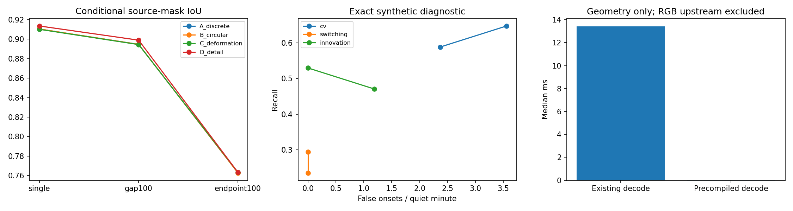

Open development. The finetuned M16 carrier and existing certificate decoder remain unchanged. These optional geometry states are selected holdout pilots, not a replacement full-timeline training release. Track 2 remains on hold.

| Holdout | Variant | Supported probes | IoU | BF2 | Certificate fraction |
|---|---|---|---|---|---|
| single | A_discrete | 17 | 0.9104155725697565 | 0.6798092074929825 | 0.6458333333333333 |
| single | B_circular | 17 | 0.9104462976635984 | 0.6802491669272364 | 0.6458333333333333 |
| single | C_deformation | 17 | 0.9101177136024595 | 0.6771750975244615 | 0.6458333333333333 |
| single | D_detail | 17 | 0.913550655488044 | 0.6913802063275678 | 0.6458333333333333 |
| gap100 | A_discrete | 17 | 0.8947034445225932 | 0.6636054201711372 | 0.7013888888888888 |
| gap100 | B_circular | 17 | 0.8946601831081087 | 0.6634026965662754 | 0.7013888888888888 |
| gap100 | C_deformation | 17 | 0.8944542813005137 | 0.6619669669604218 | 0.7013888888888888 |
| gap100 | D_detail | 17 | 0.8989975354454769 | 0.6858195484627041 | 0.7013888888888888 |
| endpoint100 | A_discrete | 11 | 0.7628533112379732 | 0.4078007589784799 | 0.9 |
| endpoint100 | B_circular | 11 | 0.7627029191875552 | 0.4064193035665776 | 0.9 |
| endpoint100 | C_deformation | 11 | 0.7632970289817766 | 0.41164117837090264 | 0.9 |
| endpoint100 | D_detail | 11 | 0.7632874326943468 | 0.41109157418161413 | 0.9 |
Same retained observations and target masks. Strict retained-mask guards reject fractional reparameterizations that reduce static IoU or BF2. Target-informed oracles are separate diagnostic columns and never fit inputs or select parameters. All unsupported probes remain in the attempt ledger. Covariance is conditional on supplied input blocks; phase, topology, identity and repaired geometry uncertainty are not calibrated.
Phase selection and denominators · Localized repair · Causal event evidence · Covariance scope · Stable-context recovery · Reference readiness · Numerical checks · Latency scope
Scientific acceptance and a final freeze still require accepted independent labels, genuinely fresh participants and a complete clean rebuild from raw sources. Machine reviews cannot satisfy those gates. Contact-aware allocation and learned association rejection remain reference-dependent.
512 samples per ring: matched original/precompiled timings and numerical parity · Frozen appearance extraction for added contexts · 75-artifact clean bounded rebuild · Final input, baseline and all-sequence checks · Proposal status ledger · Loading and reproduction guide
BF2 is two annotation-grid pixels. Curve certification does not certify a separately rasterized mask or physical contact. Target-exposed oracles are diagnostics only. The original discrete gauge remains selected by training guards.